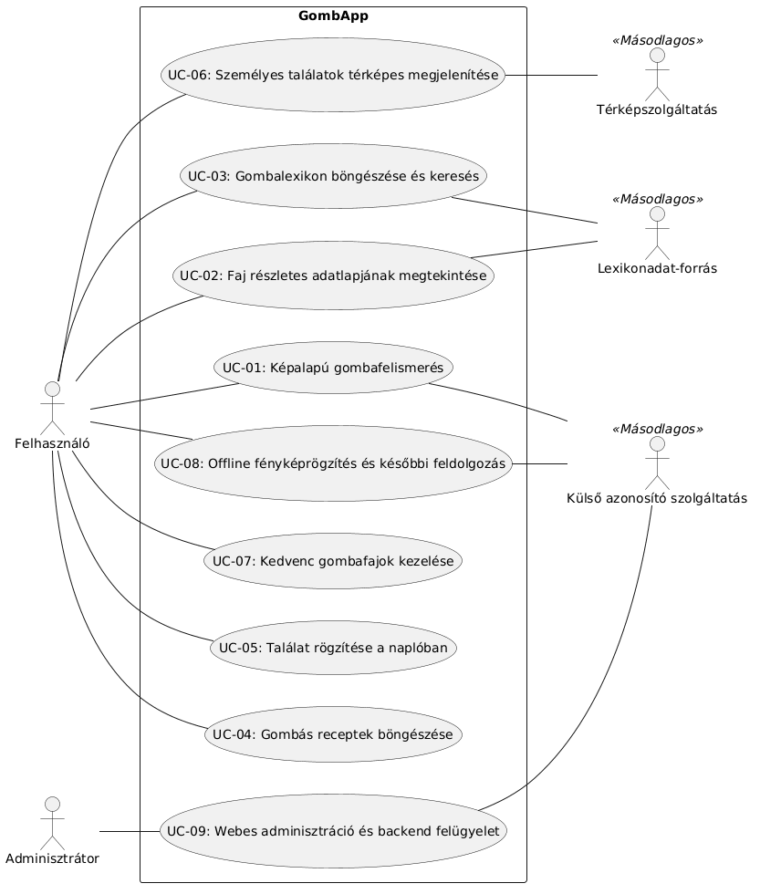

1. Bevezetés
Ez a szoftverkövetelmény-specifikáció a GombApp mobil- és webes rendszer fejlesztésének alapdokumentuma, amely pontosan rögzíti a rendszerrel szemben támasztott funkcionális és nem funkcionális követelményeket, biztosítva a fejlesztők, a megrendelő és a tesztelők számára a tiszta, egyértelmű kereteket.
- A termék célja és hatóköre: A GombApp egy okostelefonos alkalmazásból és backendből álló rendszer, amely a mesterséges intelligencia és a külső adatbázisok, mint a iNaturalist API integrálásával támogatja a terepen gyűjtött gombák gyors azonosítását. A rendszer fő funkciói közé tartozik a kamerás felismerés, a részletes fajleírások megjelenítése és az ehetőségi figyelmeztetések biztosítása.
-
Célközönség és felhasználói kör:
- Fejlesztők és tesztelők: A fejlesztéshez pontos specifikációt nyújt, a tesztelők pedig ez alapján dolgozzák ki a teszteseteket és az ellenőrzési folyamatokat.
- Projektmenedzserek és megrendelők: Elsődleges viszonyítási alap a projekt terjedelméhez, a határidők tartásához, valamint az átadás-átvételi elvárások ellenőrzéséhez.
- Üzemeltetők és karbantartók: Átláthatóvá teszi a backendet és az adatbázist, ami elengedhetetlen a felügyelethez, a hibaelhárításhoz és a későbbi skálázáshoz.
2. Áttekintés
- A termék környezete: A GombApp egy olyan rendszer, amely egy Android operációs rendszerre fejlesztett mobilalkalmazásból (kliens), egy Python alapú backendből, egy MySQL adatbázisból, valamint a gombafelismerést biztosító külső iNaturalist API-ból épül fel.
- Legfontosabb funkciók: Fénykép alapú kamerás online gombafelismerés, az offline készített képek eltárolása későbbi elemzésre, a fajok részletes leírása és ehetőségi/biztonsági státuszainak megjelenítése.
- A felhasználók jellemzői:
o Kezdő gombászok: Alacsonyabb informatikai és szakmai ismerettel rendelkeznek; számukra az egyszerű, gyors, egy kézzel kezelhető felület és az egyértelmű vizuális figyelmeztetések a legfontosabbak.
o Tapasztalt gombászok: Magasabb gombászati tudású felhasználók, akik részletes szűrőket és bővített adatrögzítési lehetőségeket igényelnek.
o Rendszerüzemeltetők: Technikai szakemberek. A naplók, a felhasználói fiókok és az API-keretek felügyeletét végzik.
- Korlátozások: A mobilalkalmazás kizárólag Android platformra készül; a működéséhez mobilinternet-kapcsolat szükséges a külső lekérdezésekhez; szigorúan be kell tartani a GDPR adatvédelmi előírásokat (különösen a helyadatoknál); és igazodni kell az iNaturalist API által megadott lekérdezési limitekhez.
- Feltételezések és függőségek: Feltételezzük, hogy a felhasználó eszköze rendelkezik működő kamerával, a terepen biztosított a stabil internetkapcsolat, valamint a külső iNaturalist szolgáltatás folyamatosan és zavartalanul elérhető.
- A követelmények csoportosításának szempontjai: A követelmények strukturálása a rendszer fő funkcionális moduljai, a nem funkcionális minőségi mutatók (használhatóság, megbízhatóság, teljesítmény), a karbantarthatósági és kódolási elvek, valamint a technikai interfészek és tervezési korlátozások mentén történik.
3. A rendszer funkciói
A fejezet a GombApp funkcionális követelményeit a felhasználók által kezdeményezett műveletek (use case-ek) szerint rögzíti. Minden esetnél megadjuk a szereplőket, az elő- és utófeltételeket, a fő folyamatot, az alternatív és kivételes eseteket, valamint a tesztelhető követelményeket. A funkciók tervezett képességeket jelölnek, nem már implementált szolgáltatásokat.
3.1. Rendszerhatár, szereplők és use case áttekintés
A rendszerhatáron belül található az Android-kliens, a backend, a személyes gyűjtemény funkciói és a webes adminisztráció. A külső azonosító és lexikon- a GombAppot kiszolgáló, de attól független rendszerek.
- Elsődleges aktor – Felhasználó: a mobilalkalmazást használó hobbi gombász vagy természetjáró. Fotót készít, a javasolt fajokat és adatlapokat áttekinti, a lexikonban és a saját találatait rögzíti.
- Elsődleges aktor – Adminisztrátor: jogosultsággal rendelkező rendszerüzemeltető, aki ellenőrzi a rendszer állapotát és elvégzi a megengedett karbantartási műveleteket.
- Másodlagos aktor – Külső azonosító szolgáltatás: a feltöltött kép alapján lehetséges taxonokat vagy felismerési eredményt szolgáltató külső komponens. A tervezett iNaturalist-integráció pontos képfelismerési interfészét a megvalósítás előtt ellenőrizni kell.
- Másodlagos aktor – Lexikonadat-forrás: gombafajok leírásait és kapcsolódó ismeretterjesztő információkat szolgáltató külső adatforrás (a tervben a Wikipédia API).

3.2. UC-01 – Képalapú gombafelismerés
- Prioritás: Magas.
- Aktorok: Felhasználó; külső azonosító szolgáltatás.
- Rövid leírás: A felhasználó fényképet készít vagy meglévő képet választ, a rendszer pedig lehetséges gombafajokat ajánl fel. Az eredmény nem tekinthető biztos azonosításnak.
- Prekondíciók (előfeltételek): A kliens elindult; a kép elérhető; online felismeréshez van hálózat és működő külső szolgáltatás. Kamerás felvételhez szükséges a kameraengedély.
- Postkondíciók (utófeltételek): Siker esetén megjelenik a találati lista, a rendelkezésre álló bizonytalansági információ és a kötelező szakértői figyelmeztetés. Sikertelen kérés esetén nem keletkezik igazolt fajazonosítás, a felhasználó erről tájékoztatva van.
Szokásos működés (Main Flow):
- A felhasználó kiválasztja a „Gomba felismerése” műveletet.
- A kliens fényképet készít, illetve felkínálja egy meglévő fénykép kiválasztását.
- A rendszer megmutatja a képet, és jóváhagyást kér a feldolgozáshoz.
- A backend továbbítja az azonosításhoz szükséges adatokat a konfigurált szolgáltatásnak.
- A rendszer feldolgozza a visszaadott fajjelölteket, és megjeleníti a lehetséges találatokat.
- A felhasználó a választott jelölt adatlapját megnyithatja (UC-02).
Alternatív esetek (Alternate Flows):
- A1. Ha több lehetséges faj érkezik, a rendszer rendezett jelöltlistát mutat, nem választ automatikusan biztos fajazonosságot.
- A2. Ha a kép nem alkalmas felismerésre vagy nincs használható jelölt, a rendszer új fényképet, jobb megvilágítást vagy további nézetet javasol.
Kivételes esetek (Exception Flows):
- E1. A kameraengedély hiányakor az alkalmazás magyarázatot jelenít meg; a felhasználó visszatérhet és a képfeltöltést választhatja.
- E2. Kapcsolat-, szolgáltatás- vagy időtúllépési hiba esetén a művelet sikertelen állapotba kerül, és a rendszer egyértelmű tájékoztatást ad. A kép offline mentését csak akkor ajánlja fel, ha az opcionális UC-08 funkció megvalósult.
- E3. Nem támogatott vagy sérült képfájl esetén a rendszer nem küld értelmezhetetlen adatot a szolgáltatásnak.
Részletes funkcionális követelmények:
- FR-01.1 A rendszernek lehetővé kell tennie kép készítését vagy kiválasztását, a feldolgozás előtti előnézettel.
- FR-01.2 A rendszer csak felhasználói jóváhagyás után indíthat külső képfeldolgozást.
- FR-01.3 A találatoknál egyértelműen jelezni kell az azonosítás bizonytalanságát; bizalmi érték csak akkor jeleníthető meg, ha azt a szolgáltatás értelmezhetően biztosítja.
- FR-01.4 A felismerési képernyőn kötelező figyelmeztetést kell megjeleníteni arról, hogy fogyasztás előtt szakértői vizsgálat szükséges.
Ellenőrzési/elfogadási feltétel: Érvényes képnél a felhasználó találatot vagy értelmezhető „nincs találat” üzenetet kap; hiba esetén nincs hamis pozitív, fogyaszthatóságot igazoló állapot.
3.3. UC-02 – Gombafaj részletes adatlapjának megtekintése
- Prioritás: Magas.
- Aktorok: Felhasználó; lexikonadat-forrás.
- Rövid leírás: A felhasználó a felismerés eredményéből vagy a lexikonból megnyitja egy gombafaj információs oldalát.
- Prekondíciók (előfeltételek): A fajhoz létezik rekord vagy beazonosítható fajazonosító; a kívánt részletes külső tartalom lekéréséhez hálózati kapcsolat áll rendelkezésre.
- Postkondíciók (utófeltételek): Megjelenik a fajlap; a felhasználó megismerheti a jellemzőket és a lehetséges veszélyes hasonmásokat, de nem kap fogyasztási engedélyt.
Szokásos működés (Main Flow):
- A felhasználó megnyit egy fajjelöltet vagy lexikonbejegyzést.
- A rendszer betölti a faj nevét (magyar és tudományos elnevezés, ha elérhető), képeit és rövid leírását.
- Megjeleníti az azonosításhoz fontos külső jegyeket és az összetéveszthető fajokra vonatkozó információt, ha van megbízható forrásadat.
- A rendszer elkülönítve megjeleníti az elérhető ehetőségi/toxikológiai információkat és azok bizonytalanságát.
- Az adatlapon elérhető marad a kötelező szakértői figyelmeztetés; a felhasználó továbbléphet a kedvencekhez (UC-05).
Alternatív esetek (Alternate Flows):
- A1. A hiányzó mezők „Nincs adat” jelzéssel szerepelnek, a nem ismert toxikológiai státusz nem minősül ehetőnek.
- A2. Amennyiben több forrás eltérő besorolást ad, a rendszer nem oldja fel automatikusan az ellentmondást fogyaszthatósági ajánlássá.
Kivételes esetek (Exception Flows):
- E1. Külső adatforrás elérhetetlenségekor a korábban hitelesen betöltött, rendelkezésre álló információk megjeleníthetők a forrás és frissesség jelzésével.
- E2. Ismeretlen vagy érvénytelen fajazonosító esetén hibaüzenetet és visszalépési lehetőséget kell adni.
Részletes funkcionális követelmények:
- FR-02.1 Minden fajlapnak tartalmaznia kell a faj azonosítóját és a ténylegesen rendelkezésre álló alapinformációkat.
- FR-02.2 A mérgezőségre, fogyaszthatóságra és veszélyes hasonmásokra vonatkozó adatokat elkülönített, jól felismerhető blokkokban kell megjeleníteni.
- FR-02.3 Hiányzó adatok esetén a rendszer nem pótolhatja találgatással a faj- vagy biztonsági jellemzőket.
Ellenőrzési/elfogadási feltétel: Hiányos rekord esetén is használható és félreérthetetlen adatlap látható; szakértői ellenőrzést helyettesítő állítás soha nem jelenik meg.
3.4. UC-03 – Gombalexikon böngészése és keresés
- Prioritás: Magas.
- Aktorok: Felhasználó; lexikonadat-forrás.
- Rövid leírás: A felhasználó képfelismerés nélkül is fajokat kereshet a GombApp gombahatározó lexikonjában.
- Prekondíciók (előfeltételek): A lexikon adatforrása vagy helyi gyorsítótára elérhető.
- Postkondíciók (utófeltételek): A keresési feltételeknek megfelelő találatok megjelennek, és bármelyik faj adatlapja megnyitható.
Szokásos működés (Main Flow):
- A felhasználó megnyitja a „Lexikon” menüpontot.
- A rendszer megjeleníti a rendelkezésre álló gombafajokat vagy az induló keresőfelületet.
- A felhasználó nevet vagy keresőkifejezést ad meg.
- A rendszer a keresési feltétel alapján találatokat listáz, és az elérhető jellemzők szerint szűrést tesz lehetővé.
- A felhasználó kiválaszt egy fajt, a rendszer megnyitja az adatlapját (UC-02).
Alternatív esetek (Alternate Flows):
- A1. Üres keresés esetén a rendszer az alapértelmezett fajlistát mutatja.
- A2. Nincs egyezés esetén a rendszer egyértelmű „Nincs találat” visszajelzést ad, és felkínálja a keresés módosítását.
- A3. Ahol a forrás engedi, a magyar és tudományos név alapján történő keresés egyaránt támogatott.
Kivételes esetek (Exception Flows):
- E1. Adatforrás-hiba esetén a rendszer jelzi a korlátozott elérhetőséget, és szükség esetén a már helyben eltárolt elemeket ajánlja fel.
Részletes funkcionális követelmények:
- FR-03.1 A rendszernek biztosítania kell szöveges keresést és a találati lista megnyitását.
- FR-03.2 A listában a faj neve mellett azonosítást segítő képi vagy rövid leíró adat jelenhet meg, amennyiben a forrásban elérhető.
- FR-03.3 A lexikonnak a felhasználó által választott fajlapot ugyanazon az azonosítón keresztül kell megnyitnia, mint a felismerési találatoknál.
Ellenőrzési/elfogadási feltétel: Ismert névre a rendszer releváns rekordot mutat; üres és hibás keresés nem eredményez téves fajadatlapot.
3.5. UC-04 – Találat rögzítése a személyes gyűjteménynaplóban
- Prioritás: Magas.
- Aktorok: Felhasználó.
- Rövid leírás: A felhasználó a Logbookban saját megfigyelést hoz létre fényképpel, lehetséges fajnévvel és dátummal.
- Prekondíciók (előfeltételek): A felhasználó megnyitotta a naplót vagy egy felismerési eredményt; van elérhető helyi tároló.
- Postkondíciók (utófeltételek): A naplóbejegyzés mentésre kerül a felhasználó saját gyűjteményében, és később visszakereshető.
Szokásos működés (Main Flow):
- A felhasználó a felismerési eredményből vagy a naplóból kiválasztja az „Új találat” műveletet.
- A rendszer felajánlja a fénykép, a lehetséges faj, a dátum és egy rövid megjegyzés megadását.
- A rendszer ellenőrzi a szükséges adatok meglétét és elmenti a bejegyzést.
- Az új elem megjelenik a Logbook listájában, ahol megtekinthető és a tervezett kezelőfunkciókkal módosítható vagy törölhető.
Alternatív esetek (Alternate Flows):
- A1. A felhasználó saját, nem igazolt fajmegnevezést is rögzíthet; ezt külön kell megkülönböztetni az automatikus jelöltektől.
Kivételes esetek (Exception Flows):
- E1. Helyi tárhelyhiány vagy mentési hiba esetén az alkalmazás egyértelmű hibát jelez, és nem állítja, hogy a bejegyzés mentése sikerült.
Részletes funkcionális követelmények:
- FR-05.1 A naplóbejegyzésnek tartalmaznia kell egyedi azonosítót, rögzítési dátumot és a rendelkezésre álló megfigyelési adatokat.
- FR-05.2 A felhasználónak vissza kell tudnia keresni és törölni saját bejegyzéseit.
- FR-05.3 A naplóba mentett lehetséges faj nem válhat automatikusan ellenőrzött azonosítássá.
Ellenőrzési/elfogadási feltétel: A mentett találat visszakereshető, és a helyengedély megtagadása nem akadályozhatja a helyadat nélküli naplózást. A hálózat nélküli mentés tesztelése csak az opcionális offline funkció megvalósítása esetén követelmény.
3.6. UC-05 – Kedvenc gombafajok kezelése
- Prioritás: Alacsony.
- Aktorok: Felhasználó.
- Rövid leírás: A felhasználó a gyakran megtekintett vagy számára érdekes gombafajokat külön listába mentheti.
- Prekondíciók (előfeltételek): A felhasználó megnyitott egy fajadatlapot vagy a kedvencek nézetét.
- Postkondíciók (utófeltételek): A kijelölt faj bekerül a kedvencek közé, illetve eltávolítás esetén kikerül onnan; a faj alapadatai változatlanok maradnak.
Szokásos működés (Main Flow):
- A felhasználó a fajlapon kiválasztja a „Kedvencekhez adás” műveletet.
- A rendszer a kiválasztott fajazonosítót a személyes kedvenclistához rendeli.
- A felhasználó megnyitja a „Kedvencek” nézetet.
- A rendszer felsorolja a korábban jelölt fajokat, és biztosítja az adatlapjuk megnyitását (UC-02).
Alternatív esetek (Alternate Flows):
- A1. Ha a faj már szerepel a kedvencek között, a rendszer nem hoz létre második, azonos bejegyzést.
- A2. A felhasználó a jelölést visszavonva eltávolíthatja a fajt a listából.
Kivételes esetek (Exception Flows):
- E1. Sikertelen mentés esetén a felület visszajelzést ad, és nem jelez végleges hozzáadást.
Részletes funkcionális követelmények:
- FR-07.1 A rendszernek fajazonosító alapján kell kezelnie a kedvenceket.
- FR-07.2 Egyazon faj személyes kedvenclistában legfeljebb egyszer szerepelhet.
- FR-07.3 A kedvencbe mentés nem módosíthatja a faj toxikológiai vagy szakértői státuszát.
Ellenőrzési/elfogadási feltétel: A jelölés hozzáadás után visszakereshető és eltávolítható, duplikáció nélkül.
3.7. UC-06 – Offline fényképrögzítés és későbbi feldolgozás
- Prioritás: Közepes
- Aktorok: Felhasználó; külső azonosító szolgáltatás (csak a kapcsolat helyreállása után).
- Rövid leírás: Opcionális, az alapváltozatban nem kötelező bővítés. Megvalósítása esetén a felhasználó hálózat nélkül elmentheti a képet és a kapcsolódó adatokat, majd később külön jóváhagyással online azonosítást indíthat.
- Prekondíciók (előfeltételek): Az eszközön használható kamera vagy meglévő kép áll rendelkezésre, a helyi tárolás engedélyezett; internet nem szükséges.
- Postkondíciók (utófeltételek): A kép és a kapcsolódó adatok biztonságosan helyben tárolódnak függőben lévő státusszal; felismerési eredmény csak sikeres későbbi online feldolgozáskor keletkezik.
Szokásos működés (Main Flow):
- A felhasználó internetkapcsolat nélkül fényképet készít.
- A rendszer észleli, hogy online fajazonosítás nem végezhető.
- A felhasználó az „Elmentés későbbre” műveletet választja.
- A rendszer helyben eltárolja a képet, a dátumot és a felhasználó által megadott további adatokat.
- Kapcsolat helyreállásakor a rendszer jelzi, hogy vannak feldolgozásra váró képek.
- A felhasználó külön jóváhagyással elindítja az online azonosítást (UC-01).
Alternatív esetek (Alternate Flows):
- A1. A felhasználó dönthet úgy, hogy a képet csak megfigyelésként őrzi meg, és nem küldi el azonosításra.
- A2. Sikeres feldolgozás után a kép és az eredmény naplóbejegyzésként is rögzíthető (UC-05).
Kivételes esetek (Exception Flows):
- E1. Tárhelyhiány vagy sérült fájl esetén hibaüzenet jelenik meg; a rendszer nem törölheti észrevétlenül az eredeti képet.
- E2. Ha a kapcsolat a küldés közben újra megszakad, a tétel nem kaphat „Sikeresen azonosítva” állapotot.
Részletes funkcionális követelmények:
- FR-08.1 Ha az offline képmentés megvalósul, a rendszernek internetkapcsolat nélkül is biztosítania kell a fényképek helyi mentését.
- FR-08.2 Megvalósítása esetén a függő tételekhez egyértelmű feldolgozási állapotot kell rendelni.
- FR-08.3 Ha a későbbi online továbbítás funkció megvalósul, ahhoz külön felhasználói megerősítés szükséges; észrevétlen automatikus adatfeltöltés nem indítható. Az UC-01 általános jóváhagyási követelménye ettől függetlenül kötelező (FR-01.2).
- FR-08.4 Az offline bővítés nem állíthat elő online azonosításként megjelenített, nem létező találatot.
Ellenőrzési/elfogadási feltétel: Amennyiben az offline mentés megvalósul, internetkapcsolat nélkül a mentett fotó visszakereshető, és a későbbi online feldolgozás csak külön felhasználói jóváhagyással indul.
3.8. UC-07 – Adminisztrációs felület
- Prioritás: Közepes.
- Aktorok: Adminisztrátor; külső azonosító szolgáltatás (állapotlekérdezésekhez).
- Rövid leírás: Az arra jogosult üzemeltető egy külön felületen ellenőrizheti a háttérrendszer elérhetőségét, a hibákat és a külső integrációkat.
- Prekondíciók (előfeltételek): Az adminisztrációs szolgáltatás elérhető; az adminisztrátor megfelelő jogosultsággal hitelesítette magát.
- Postkondíciók (utófeltételek): A rendszer állapotadatai megjelennek, és a jóváhagyott felügyeleti műveletek naplózott módon hajtódnak végre.
Szokásos működés (Main Flow):
- Az adminisztrátor megnyitja az adminfelületet.
- A rendszer hitelesíti a felhasználót és ellenőrzi a hozzáférési jogosultságait.
- Megjeleníti az alkalmazás backendjének és a külső API-integrációknak az állapotát.
- Az adminisztrátor megtekinti a megfelelően szűrt működési naplókat és hibastatisztikákat.
- Szükség esetén jogosult üzemeltetési műveletet kezdeményez; a rendszer a művelet eredményét és végrehajtóját naplózza.
Alternatív esetek (Alternate Flows):
- A1. A rendszergazda csak megtekinti az állapotjelzőket, módosítást nem végez.
- A2. Nem elérhető külső szolgáltatás esetén a felület az állapotot hibásként vagy ismeretlenként jelzi, és nem mutat félrevezető „Működik” állapotot.
Kivételes esetek (Exception Flows):
- E1. Sikertelen hitelesítés vagy jogosultsághiány esetén az adminisztrációs adatokhoz való hozzáférést meg kell tagadni.
- E2. Backend hiba vagy hibás naplóforrás esetén a felület hibajelzést ad, de nem tár fel érzékeny hitelesítő vagy személyes adatot.
Részletes funkcionális követelmények:
- FR-09.1 Az adminisztrációs funkciók kizárólag megfelelő jogosultság ellenőrzése után érhetők el.
- FR-09.2 A rendszernek biztosítania kell a szolgáltatásállapot és a hibák áttekintését.
- FR-09.3 A kritikus adminisztrációs műveletekhez auditnaplót kell vezetni.
- FR-09.4 A megjelenített naplókban a személyes adatok és hitelesítési titkok hozzáférését korlátozni kell.
Ellenőrzési/elfogadási feltétel: Jogosulatlan felhasználó nem látja az adminfelület tartalmát; jogosult felhasználó ellenőrizhető állapotokat és naplózott műveleteket kap.
3.9. Use case kapcsolatok, prioritások és nyitott függőségek
Use case kapcsolatok: Az UC-01 eredményéből megnyitható az UC-02 fajadatlap; az UC-02-ből elérhető az UC-04. Az UC-03 keresési eredménye szintén az UC-02-höz vezet. Az UC-06 felhasználói jóváhagyás után az UC-01 online folyamatába léphet át. Ezek navigációs vagy feltételes kapcsolatok, nem minden esetben kötelező UML «include» viszonyok.
Prioritások és kötelező terjedelem: Magas – UC-01, UC-02, UC-03, UC-04. Közepes – UC-06, UC-07. Alacsony – UC-05.
Átfogó biztonsági és adatvédelmi szabály: A kötelező biztonsági figyelmeztetéseket és az ismert veszélyek jelzéseit minden felhasználó számára meg kell jeleníteni. A rendszer egyetlen ponton sem minősítheti a kép alapján talált gombát automatikusan bizonyítottan ehetőnek. A helyadatok kezelése csak megfelelő felhasználói döntéssel történhet, a külső API-k hibája pedig kezelhető állapotot, nem hallgatólagosan sikeres eredményt okozhat.
Nyitott technikai függőségek: A tervezett iNaturalist megoldás képalapú azonosítási interfészének elérhetőségét és felhasználási feltételeit, a tényleges lexikon adatforrás, valamint a regisztráció/szinkronizáció konkrét működését az implementáció megkezdése előtt tisztázni kell. Az UC-08 csak választott bővítésként kerülhet be a kötelező fejlesztési tervbe.
Kapcsolódó fejezetek: A használhatósági célértékeket a 4., a rendelkezésre állási és hibakezelési elvárásokat az 5., a teljesítményt a 6., a jogosultságkezelési és technikai korlátokat a 7–8., a külső komponenseket és interfészeket a 10–11. fejezet részletezi.
4. Használhatóság
Ebben a fejezetben azokat a használhatósági és felhasználói élményhez kapcsolódó nem-funkcionális követelményeket részletezzük, amelyek biztosítják, hogy az alkalmazás a kezdő természetjáróktól a tapasztalt gombászokig minden célcsoport számára gyorsan megtanulható, hatékony és kényelmesen kezelhető legyen.
4.1. Feladatvégrehajtási idő összehasonlítása
A terepen történő gombaazonosítás és leletrögzítés ideje a GombApp segítségével töredékére csökken a hagyományos módszerekhez képest:
Hagyományos módszer (Nyomtatott határozókönyvvel):
Egy ismeretlen gomba azonosítása a morfológiai kulcsok fellapozásával, a határozóbélyegek ellenőrzésével és a lehetséges fajok áttekintésével átlagosan 10–20 percet vesz igénybe a terepen. Ráadásul az összetéveszthető fajok kiszűrése bizonytalan marad, a lelet pontos helyének manuális feljegyzése pedig külön időt igényel.
GombApp alkalmazással:
- Fénykép készítése és beküldése: ~5–10 másodperc.
- Automatikus gépi azonosítás és találati lista megjelenítése: ~3–5 másodperc.
- Adatlap megtekintése, mentés a Logbookba: ~15–30 másodperc.
Összesített végrehajtási idő: kevesebb mint 1 perc.
4.2. Betanulási idő
- Kezdő felhasználók:
A mobilalkalmazás kezelése nem igényel informatikai vagy biológiai előképzettséget. Egy átlagos okostelefon-használó számára a betanulási idő legfeljebb 5–10 perc. Ezen idő alatt a felhasználó képes önállóan elkészíteni az első gombafotót, elindítani a képalapú fajmeghatározást, és értelmezni a kapott találati listát a biztonsági figyelmeztetésekkel együtt.
- Gyakorlott felhasználók / rendszeres túrázók:
A digitális alkalmazásokban jártas vagy a korábbi határozókat ismerő felhasználók számára a rendszer azonnal, intuitív módon kezelhető; a betanulási idő 1–2 percre korlátozódik. A teljes funkcionalitás – beleértve a szűrést és a Logbook gyűjteménynaplóba való elmentését – azonnal elsajátítható.
4.3. A gyors betanulást segítő rendszertulajdonságok
A kezdő felhasználók magabiztos eligazodását a felületen az alábbi beépített tulajdonságok támogatják:
- Minimális kattintásszám (One-Tap indítás): A kamera és a fotózás funkció közvetlenül a főképernyőről, egyetlen érintéssel elérhető.
- Egységes és közérthető nyelvezet: Kerüljük az absztrakt informatikai szakkifejezéseket és a nehezen megérthető latin taxonómiai leírásokat; a gombák magyar nevei és a köznyelvi morfológiai jellemzők szerepelnek az előtérben.
- Vizuális állapot-visszajelzés és ikonográfia: A toxikológiai státuszok azonnal felismerhető, szabványos színkódokkal jelennek meg (pl. zöld: ehető, piros: mérgező).
4.4. Hasonlóság a felhasználók által korábban használt alkalmazásokkal
- Konzisztens mobil UX minták: A GombApp felhasználói felülete szigorúan követi a modern Android operációs rendszereken megszokott elrendezési és tervezési irányelveket.
- Kamerakezelési hasonlóság: A fotózási felület működése teljes mértékben megegyezik a standard Android kameraalkalmazások logikájával, így a felhasználó számára az alkalmazás kezelése már az első pillanattól ismerős és reflexszerű.
4.5. Összhang a terepi munka során párhuzamosan használt alkalmazásokkal
A természetjárók és gombászok túrázás közben jellemzően egyéb szabadtéri alkalmazásokat is futtatnak telefonjukon (például túratérképeket, navigációs eszközöket vagy fitneszkövetőket):
- Erőforrás-takarékos háttérműködés: A GombApp minimális memóriát és processzoridőt használ, és a kamera bezárása után azonnal felszabadítja az erőforrásokat, így a háttérben futó GPS-nyomkövető vagy térképalkalmazás akadozás nélkül képes tovább üzemelni.
- Interakciós harmónia: Az alkalmazás támogatja az Android szabványos többalkalmazásos feladatváltását (multitasking). A felhasználó másodpercek alatt át tud lépni a túratérképből a GombApp kamerájába, majd az azonosítás és mentés után zökkenőmentesen visszatérhet az eredeti navigációs szoftverhez.
- Rendszerszintű szabványok: Az egységes Android jogosultságkezelésnek (kamera, helymeghatározás) köszönhetően a felhasználó nem találkozik váratlan biztonsági értesítésekkel vagy rendszerszintű ütközésekkel a párhuzamos programok futtatása közben.
5. Megbízhatóság
Ebben a fejezetben összefoglaljuk, hogy a GombAppnak milyen elvárásoknak kell megfelelnie ahhoz, hogy a felhasználók számára megbízhatóan és stabilan működjön. Fontos, hogy az alkalmazás lehetőség szerint mindig elérhető legyen, a felmerülő hibákat rövid időn belül javítani lehessen, és a gombák felismerése során kapott eredmények a lehető legpontosabbak legyenek.
5.1. Rendelkezésre állás
· Folyamatos működés: A GombApp backendjének és az alkalmazást kiszolgáló API-ok végpontjainak éves szinten legalább 99,5%-os rendelkezésre állást kell biztosítaniuk. Ez azt jelenti, hogy a szolgáltatásnak az év nagy részében elérhetőnek kell lennie.
· Karbantartás: A tervezett karbantartásokat lehetőség szerint olyan időszakokra kell időzíteni, amikor várhatóan kevesebben használják az alkalmazást, például éjszaka, 02:00 és 05:00 óra között. A tervezett leállások időtartama havonta összesen nem haladhatja meg a 4 órát.
· Hálózati kiesés kezelése: Ha a külső szolgáltatás vagy az internet nem érhető el, a rendszernek egyértelmű hibajelzést kell adnia, és nem mutathat valótlan sikeres azonosítást. Az offline képmentés, offline lexikon és az internet nélküli további műveletek opcionális bővítések, nem kötelező részei az alapváltozatnak.
5.2. MTBF – A hibák között eltelt átlagos idő
· Szerveroldal (backend): A háttérrendszer esetében legalább 720 órás, vagyis megközelítőleg egy hónapos átlagos időtartamot tűzünk ki két olyan meghibásodás között, amely jelentősen befolyásolja a működést.
· Mobilalkalmazás (Android): A cél, hogy az alkalmazás a használat során a lehető legritkábban álljon le váratlanul. Elvárás, hogy az összeomlás nélkül lezajló munkamenetek aránya meghaladja a 99%-ot. Emellett célként legalább 100 óra aktív használati időt határozunk meg két alkalmazásösszeomlás között.
5.3. MTTR – A hibák kijavításához szükséges átlagos idő
· Súlyos szerveroldali hibák: Ha a backendvagy a MySQL-adatbázis hibája miatt az alkalmazás alapvető szolgáltatásai teljesen leállnak, a helyreállítás célzott időtartama legfeljebb 4 óra. Ehhez szükség van a hibák gyors felismerésére és a megfelelő javítási lehetőségek biztosítására.
· Mobilalkalmazás hibái: Ha az alkalmazásban olyan hiba jelentkezik, amely megnehezíti a használatot, de nem teszi teljesen működésképtelenné, a javításhoz szükséges fejlesztési idő célértéke legfeljebb 24 óra.
5.4. A rendszer eredményeinek pontossága
· Felismerési pontosság: A GombApp az iNaturalist szolgáltatását használja a gombafajok felismerésének támogatására, ezért az eredmények a feltöltött kép minőségétől és a szolgáltatás által elérhető adatoktól is függenek.Cél, hogy megfelelő fényviszonyok között, éles, a gomba fontos részeit jól bemutató fénykép esetén az esetek legalább 91%-ában a három felajánlott találat között szerepeljen a helyes faj. Ezt az értéket teszteléssel kell ellenőrizni, és nem tekinthető előre garantált eredménynek.
· Biztonsági korlátozások: A rendszer nem garantálhat 100%-os pontosságot, és szakértői ellenőrzés nélkül nem jelölhet egy gombát biztosan ehetőként. Minden felismerésnél egyértelműen jelezni kell, hogy az alkalmazás nem helyettesíti a szakértői vizsgálatot. A biztonsági figyelmeztetéseknek akkor is meg kell jelenniük, ha a rendszer valamelyik faj felismerését nagy valószínűségűnek ítéli.
6. Teljesítmény
Ez a fejezet azt mutatja be, milyen gyorsan és mekkora terhelés mellett kell működnie a GombAppnak. Fontos szempont, hogy az alkalmazás a gombaszezon forgalmasabb időszakaiban is megfelelően működjön, és a felhasználók gyengébb hálózati lefedettség mellett is el tudják végezni az alapvető műveleteket.
6.1. Válaszidők
A kényelmes használat érdekében az alkalmazásnak a legfontosabb műveletekre rövid időn belül reagálnia kell. Az alábbi célértékek megfelelő, 4G- vagy 5G-lefedettség mellett érvényesek.
· Az alkalmazás indítása: Az alkalmazás elindításától számítva legfeljebb 3 másodpercen belül meg kell jelennie a nyitóképernyőnek, és elérhetővé kell válnia a kamerának.
· Navigáció és felhasználói műveletek: A képernyők közötti váltásnak és a gombnyomásokra adott visszajelzéseknek lehetőleg 0,5 másodpercen belül meg kell történniük, hogy az alkalmazás használata folyamatosnak érződjön.
· Képfelismerés: A fénykép elkészítésétől a felismerési eredmény megjelenítéséig a teljes folyamat célideje 5–8 másodperc. Ebbe beletartozik a kép továbbítása, a Python backend feldolgozása és az iNaturalist API lekérdezése is. A várakozás ideje alatt egyértelmű töltésjelzőnek vagy folyamatjelző sávnak kell tájékoztatnia a felhasználót.
· Adatbázis-műveletek: A saját MySQL-adatbázisban végzett mentések és lekérdezések válaszideje normál terhelés mellett legfeljebb 1 másodperc lehet.
Ezek a válaszidők fejlesztési célértékek, amelyeket teszteléssel kell ellenőrizni. A tényleges képfelismerési idő a hálózat sebességétől és a külső szolgáltatás válaszidejétől is függhet.
6.2. Áteresztőképesség (Throughput)
A GombAppnak nemcsak egy-egy felhasználó kiszolgálására kell alkalmasnak lennie, hanem a forgalmasabb időszakokban jelentkező nagyobb terhelést is kezelnie kell. Ez különösen fontos ősszel és a hétvégéken, amikor sokan indulnak gombászni.
· A Python backendnek normál terhelés mellett másodpercenként 10–20 képfelismerési kérést, a kiemelt őszi időszakokban pedig célként legalább 100 ilyen kérést kell kezelnie. A rendszernek törekednie kell arra, hogy a terhelés növekedése ne okozzon jelentős lassulást vagy elvesző kéréseket.
· Nagyobb forgalom esetén a szervernek képesnek kell lennie a beérkező feladatok szabályozott kezelésére. Ehhez szükség esetén aszinkron feladatkezelés és várakozási sor is alkalmazható, például Celery és RabbitMQ segítségével. Így a túlterhelés kockázata csökkenthető, a kérések pedig rendezett módon dolgozhatók fel.
A másodpercenként 100 kérés kezelése teljesítménycél, amelynek elérését terheléses tesztekkel kell igazolni. A szükséges szerverkapacitást a tényleges mérési eredmények alapján kell meghatározni.
6.3. Kapacitás
A rendszernek az első évben várható felhasználói és adatmennyiség kezelésére is fel kell készülnie. A cél az, hogy a felhasználók számának és a mentett adatok mennyiségének növekedése ne akadályozza az alkalmazás működését.
· Egyidejű felhasználók: A rendszernek célként akár 1000 aktív, műveleteket indító felhasználót is ki kell tudnia szolgálni a csúcsidőszakokban.
· Regisztrált felhasználók: Az adatbázisnak 20 000–50 000 felhasználói profil és a hozzájuk tartozó beállítás tárolását kell támogatnia.
· MySQL-adatbázis: A felhasználói adatok és a mentett gombanapló-bejegyzések tárolására kezdetben 50 GB kapacitással kell számolni.
· Képek tárolása: A feltöltött és elemzett fényképek számára legalább 500 GB kezdeti tárhelyet kell biztosítani egy bővíthető, S3-kompatibilis fájltárolón.
A kapacitás megtervezésekor figyelembe kell venni, hogy az egyidejű felhasználók száma nem feltétlenül egyezik meg az egy időben képfelismerést indító felhasználók számával. A szükséges erőforrásokat ezért a várható használati szokások és a terheléses tesztek alapján kell véglegesíteni.
6.4. Korlátozott használhatóság idején elvárható mutatók
A gombászás során a felhasználók gyakran olyan területre jutnak, ahol gyenge vagy hiányzik a mobilhálózat.
· Hálózati kapcsolat hiányának jelzése: Ha megszakad a kapcsolat, az alkalmazásnak egyértelműen jeleznie kell, hogy az online felismerés nem érhető el. A helyi, offline funkciókra való automatikus átváltásnál az 1 másodperc a célérték.
· Offline mentés (UC-06): A fénykép és a kapcsolódó adatok helyben tárolhatók, például Room adatbázisra támaszkodva. A 0,5 másodperces mentési idő fejlesztési célérték. Hálózat helyreállásakor az online feldolgozás csak a felhasználó újabb jóváhagyásával indulhat.
· Az iNaturalist szolgáltatás elérhetetlensége: Ha a külső szolgáltatás nem válaszol, és a kérés 10 másodperc alatt időtúllépés miatt megszakad, a backendnek egyértelmű, felhasználóbarát üzenetet kell küldenie. Például: „A szolgáltatás átmenetileg szünetel.” Így a felhasználó tudni fogja, miért nem érkezett eredmény, és nem kell bizonytalan ideig várakoznia.
6.5. Erőforrásigények
A megfelelő teljesítményhez a mobiltelefonoknak és a szerveroldali környezetnek is elegendő erőforrással kell rendelkeznie. Az alábbi értékek kiindulási követelmények, amelyeket a fejlesztés és a tesztelés során ellenőrizni kell.
· Kliens – Android-eszközök:
o Processzor és memória: Az alkalmazásnak egy átlagos középkategóriás processzorral és legalább 2 GB RAM-mal rendelkező eszközön is használhatónak kell lennie. A kamerakezelést és a fényképek mentését ilyen környezetben is tesztelni kell.
o Tárhely: Az alkalmazás alapvető telepítési méretének célértéke legfeljebb 50 MB. Az offline fényképtároláshoz külön tárhelykeret tervezhető; példaként 200 MB állítható be. Ez nem kötelező alapfunkció.
· Szerver – Backend és adatbázis:
o Számítási kapacitás és memória: Kiindulásként legalább 4 virtuális processzormaggal (vCPU) és 8 GB RAM-mal rendelkező szerverkörnyezetet kell tervezni a Python backend és a párhuzamos feladatok futtatásához. A tényleges igény a terheléstől, az alkalmazott feldolgozási módszerektől és az adatbázis elhelyezésétől függ.
o Hálózati sávszélesség: A szerverközpontban legalább 1 Gbps hálózati kapcsolat a cél, hogy a jellemzően 1–5 MB méretű képfájlok fogadása ne váljon szűk keresztmetszetté.
A végleges hardver- és tárhelyigényeket teljesítménytesztek alapján kell meghatározni. Így biztosítható, hogy a GombApp a várható használat mellett is megfelelő sebességgel, megbízhatóan és a rendelkezésre álló erőforrásokat hatékonyan kihasználva működjön.
7. Támogatottság
A GombApp fejlesztése során fontos szempont, hogy az alkalmazás a későbbiekben is könnyen karbantartható és megbízhatóan működtethető legyen. Ehhez olyan megoldásokat kell alkalmazni, amelyek megkönnyítik a hibák megtalálását, a szükséges javítások elvégzését és az új funkciók beépítését. Az alábbi követelmények ezt a célt szolgálják.
7.1. Kódolási szabályok és elnevezések
Ahhoz, hogy a fejlesztők könnyen eligazodjanak egymás munkájában, fontos, hogy a programkód egységes formában készüljön. Ez különösen akkor hasznos, ha később más fejlesztőnek kell módosítania vagy továbbfejlesztenie az alkalmazást.
· A kód nyelve: A változók, osztályok és függvények neveit, valamint a kódhoz írt megjegyzéseket angolul kell megadni.
· Androidos alkalmazás (Java/Kotlin): A fejlesztés során követjük a Google által meghatározott kódolási szabályokat. Így camelCase-t használunk, az osztálynevek nagybetűvel, a változók és metódusok nevei pedig kisbetűvel kezdődnek.
· Backend (Python): A Python-kód a PEP 8 stílusirányelvek szerint készül. Ezek meghatározzák többek között a kód formázását és az elnevezések egységes használatát.
· Adatbázis (MySQL): Az adatbázis tábláinak és oszlopainak nevei angolul, snake_case-el készülnek.
7.2. Karbantartói és üzemeltetői funkciók
A GombApphoz egy külön adminisztrációs felület készül, amelyet kizárólag az arra jogosult karbantartók és üzemeltetők használhatnak. A felület célja, hogy a rendszer ellenőrzéséhez és kezeléséhez szükséges feladatokat egyszerűbben lehessen elvégezni.
Az adminisztrációs felület főbb funkciói:
· Külső szolgáltatások ellenőrzése: Lehetővé teszi az iNaturalist API kapcsolatának ellenőrzését, a lekérdezések számának követését, valamint figyelmeztetést küldhet, ha közeledik a lekérdezési korlát elérése.
· Adatbázis kezelése: Segítségével az üzemeltetők biztonsági mentéseket készíthetnek az adatbázisról, illetve törölhetik az ideiglenesen tárolt adatokat. Ez segít a tárhely megfelelő kihasználásában és az adatok biztonságának megőrzésében.
· Felhasználók kezelése: Az adminisztrátorok szükség esetén felfüggeszthetik vagy törölhetik a felhasználói fiókokat, például szabályszegés vagy adatvédelmi kérelem esetén. Ezeket a műveleteket megfelelő jogosultságok mellett és az adatvédelmi előírások betartásával kell elvégezni.
7.3. Rendszernaplózás
A rendszer működése során különböző események és hibák fordulhatnak elő. Ezek rögzítése segít abban, hogy a fejlesztők és az üzemeltetők később meg tudják állapítani, mi okozta a problémát, és hogyan lehet azt kijavítani.
· Szerver- és hálózati naplók: A backend rögzíti a fontosabb hibákat, például a szerveroldali 500-as hibakódokat. Emellett követhető az adatbázis-lekérdezések futási ideje és az iNaturalist API válaszideje is. Ezek az információk segítenek felismerni a lassulásokat és a kapcsolat megszakadásából eredő problémákat.
· Mobilalkalmazás naplói: Az alkalmazás rögzíti a fontosabb működési hibákat, például a hálózati kapcsolat megszakadását, a memóriahiány miatt bekövetkező leállásokat és a gombafelismerési folyamat megszakadását. Internetkapcsolat esetén ezek az adatok továbbíthatók a fejlesztők számára, hogy könnyebben megvizsgálhassák a problémákat.
· Adatvédelem (GDPR): A naplózás során különös figyelmet kell fordítani a személyes adatok védelmére. A naplók nem tartalmazhatnak szükségtelen személyes azonosítókat, például közvetlenül azonosítható felhasználói adatokat. Az eszközazonosítókat csak indokolt esetben, megfelelő védelemmel és lehetőség szerint anonimizált vagy álnevesített formában szabad tárolni. A naplózott adatokat kizárólag a szükséges ideig lehet megőrizni.
7.4. A karbantartást segítő eszközök
A hibák felderítését nem szükséges kizárólag a naplófájlok kézi átnézésével végezni. Különböző fejlesztői eszközök is segíthetik a rendszer állapotának ellenőrzését és a problémák gyorsabb megtalálását.
· Firebase Crashlytics vagy hasonló eszköz: Segítségével nyomon követhetők a mobilalkalmazás váratlan leállásai. Az eszköz összegyűjti és csoportosítja a hibákat, valamint megmutatja, hogy a program melyik részén történt az összeomlás. Ez megkönnyíti a hibák okának felderítését és javítását.
· Grafana vagy Kibana: Ezek az eszközök segítenek a backendés az adatbázis működésének áttekintésében. Grafikonokon és különböző kimutatásokon keresztül követhető például a szerver processzor- és memóriahasználata, valamint a hibák gyakorisága. Így az üzemeltetők hamarabb észrevehetik, ha a rendszer túlterheltté válik, vagy valamilyen probléma jelentkezik.
8. Tervezési korlátozások
A GombApp fejlesztése során előre meghatározott technológiákat, fejlesztőeszközöket és módszereket használunk. Ezek kijelölik a projekt kereteit, és segítenek abban, hogy az alkalmazás különböző részei megfelelően működjenek együtt. A fejlesztés során az alábbi szempontokat kell figyelembe venni.
8.1. A rendszer felépítésére vonatkozó előírások
A GombApp több, egymással kapcsolatban álló részből épül fel. A felhasználói felület, a háttérben működő programlogika és az adatbázis külön egységet alkot, így mindegyiknek megvan a saját feladata.
· Kliens réteg: Ez az a felület, amellyel a felhasználó közvetlenül találkozik. Ezt a használatot egy Androidos mobilalkalmazás biztosítja.
· Backend réteg: Ez a rendszer háttérben működő része, amely feldolgozza a kéréseket, kezeli az alkalmazás működéséhez szükséges feladatokat, és kapcsolatot tart a külső szolgáltatásokkal, például az iNaturalist-al.
· Adatréteg: Az adatbázis tárolja a rendszer működéséhez szükséges adatokat, például a felhasználókhoz és a felismert gombákhoz kapcsolódó információkat. Ehhez relációs adatbázis-kezelő rendszert használunk.
8.2. Programozási nyelvek
A fejlesztés különböző részeihez eltérő programozási nyelveket használunk. Ezeket úgy választjuk meg, hogy az adott feladatot megfelelően lehessen velük megvalósítani.
· Androidos alkalmazás: Java vagy Kotlin nyelven készül, mivel ezekkel közvetlenül elérhetők az Android rendszer funkciói.
· Backend: Python nyelven készül, amely jól használható az adatok feldolgozására és a külső szolgáltatásokkal való kapcsolattartásra.
· Adatbázis-kezelés: SQL segítségével kezeljük és kérdezzük le az adatbázisban tárolt információkat.
8.3. Fejlesztőeszközök és munkakörnyezetek
A fejlesztés során különböző programokat használunk a kódoláshoz, a tervezéshez, az adatbázis kialakításához és a feladatok követéséhez. Ezek segítségével a munka átláthatóbbá és könnyebben szervezhetővé válik.
· Android Studio: Az Androidos mobilalkalmazás fejlesztésére és tesztelésére szolgál.
· Visual Studio vagy PyCharm: A backend és a webes felületek fejlesztését segíti, a választott technológiától függően.
· XAMPP: Helyi fejlesztési és tesztelési környezetet biztosít, többek között Apache webszerverrel és MySQL-adatbázissal.
· Figma: A felhasználói felületek megtervezésére és a működésüket bemutató prototípusok elkészítésére használjuk.
· Miro és/vagy ERDPlus: Az adatbázis felépítésének megtervezését és az adatok közötti kapcsolatok ábrázolását segítik.
· Trello: A projekt feladatainak nyomon követésére, a határidők kezelésére és a fejlesztési folyamat megszervezésére szolgál.
8.4. Újrafelhasználható elemek és külső szolgáltatások (API)
A fejlesztés során külső szolgáltatásokat is felhasználunk, hogy ne kelljen minden funkciót saját magunknak elkészíteni.
- Gomba- és fajfelismerés: A GombApp az iNaturalist API-ját használja a gombafajok felismerésének támogatására és a hozzájuk kapcsolódó információk lekérdezésére. Az iNaturalist egy olyan online természetismereti adatbázis, amelyben különböző élőlényekről, többek között gombákról is találhatók adatok és fényképek.
- A projekt során nem tervezünk készíteni és betanítani saját képfelismerő mesterséges intelligenciát, hanem a már meglévő külső szolgáltatásra támaszkodunk. Ez lehetővé teszi, hogy az alkalmazás a feltöltött kép alapján segítsen a lehetséges fajok azonosításában, majd további információkat jelenítsen meg róluk. A kapott találatok értékelésénél figyelembe vesszük az elérhető fajadatokat és a felismerés bizonytalanságát is.
- Fontos, hogy az iNaturalist által adott eredmény nem tekinthető minden esetben biztos fajazonosításnak, különösen a mérgező és az ehető gombák megkülönböztetésekor. Ezért a GombApp célja a felismerés támogatása és az ismeretterjesztés, nem pedig a hivatalos gombaszakértői vizsgálat helyettesítése.
8.5. Fejlesztési módszertan
A projekt a hagyományos vízesésmodell alapján valósul meg. Ez azt jelenti, hogy a fejlesztés előre meghatározott, egymásra épülő szakaszokból áll, és minden szakasz lezárása után kezdődik a következő.
A fejlesztés főbb lépései a következők:
- Követelményelemzés: Meghatározzuk, hogy milyen problémára nyújt megoldást a GombApp, és milyen funkciókat kell tartalmaznia.
- Tervezés: Elkészítjük az alkalmazás felépítését, a felhasználói felületek terveit Figmában, valamint az adatbázis terveit.
- Megvalósítás: A jóváhagyott tervek alapján elkezdődik a programozás és a különböző funkciók kialakítása.
- Tesztelés: Ellenőrizzük, hogy az alkalmazás megfelelően működik-e, és javítjuk az esetlegesen felmerülő hibákat.
- Üzembe helyezés: Elkészítjük az alkalmazás használatra szánt változatát, és elérhetővé tesszük a felhasználók számára.
- Karbantartás: A kiadás után szükség szerint javítjuk a hibákat, és elvégezzük a működés fenntartásához szükséges módosításokat.
A vízesésmodell alkalmazásakor minden szakaszt dokumentálunk, és a következő szakasz csak az előző lezárása után kezdődik meg. Például a tényleges programozás a felhasználói felület és az adatbázis terveinek véglegesítése után indul el. Ez a megközelítés segít abban, hogy a fejlesztés rendezett keretek között, előre meghatározott lépések mentén haladjon.
9. On-line dokumentáció és Help rendszer
A rendszerhez nem készül nyomtatott kézikönyv; minden információ kizárólag digitális formátumban, az alkalmazáson belül, a projekt weboldalán és a fejlesztői felületeken érhető el.
Felhasználói Help rendszer (Alkalmazáson belül és weben)
- Közérthetőség: Az alkalmazás teljesen magyar nyelvű, amely kerüli a bonyolult informatikai és gombászati szakkifejezéseket, így bárki számára könnyen érthető és használható.
- Beépített útmutató (Onboarding): Lépésről lépésre haladó, rövid bemutató az első használatkor a fő funkciókról, amely később bármikor újraindítható.
- Képes segédlet: Vizuális útmutató a helyes, felismerésre alkalmas gombafotók elkészítéséhez (fényviszonyok, élesség, kalap, lemezek és tönk láthatósága).
- Beépített Súgó / GYIK: Gyakori kérdéseket és megoldásokat tartalmazó, kereshető modul az appban és a weboldalon, beleértve a veszélyhelyzeti teendőket is.
Fejlesztői és Üzemeltetői on-line dokumentáció
- Kollaboratív felületek: A technikai leírások, API-kapcsolatok, adatbázis-sémák és az üzemeltetési lépések (például biztonsági mentések, frissítések) online tudásbázisban (pl. Notion, Confluence) tárolva.
- Repozitórium alapú dokumentáció: A forráskód mellett elhelyezett, a kóddal együtt frissülő Markdown fájlok (pl. README.md a GitHubon/GitLabon) a fejlesztési környezet beállításaihoz és a verziónaplókhoz.
10. Felhasznált kész komponensek
-
iNaturalist API
- Típus: Szabad felhasználású (nyílt API)
- Forrás: iNaturalist API
- Felhasználás szabályai: Ingyenes, de szigorú rate-limit vonatkozik rá. Kereskedelmi túlterhelés esetén a hozzáférést letiltják.
- Kötelezettségek és következmények: A hálózati hibákat és a korlátozások túllépését a kódnak kezelnie kell. A találatoknál a forrásmegjelölés etikai és sok esetben licencszabályi elvárás.
-
Wikipedia REST API v1
- Típus: Szabad felhasználású
- Forrás: Wikimedia
- Felhasználás szabályai: Ingyenes, regisztrációt nem igényel. A tartalmak Creative Commons licence alatt állnak.
- Kötelezettségek és következmények: A lekérdezéseknél kötelező egyedi, beszédes ‘User-agent’ fejléc használata. A megjelenített szövegeknél fel kell tüntetni a forrást (Wikipédia) és a CC licencet.
-
Android CameraX API és SDK
- Típus: Szabad felhasználású
- Forrás: Android Developer Page
- Felhasználás szabályai: Apache License 2.0. Ingyenesen, korlátozás nélkül felhasználható kereskedelmi célokra is.
- Kötelezettségek és következmények: A licence minimális kötelezettségekkel jár (eredeti licencefájl mellékelése forráskód-terjesztéskor). A Google Play Store irányelveit be kell tartani a publikáláskor.
-
MySQL
- Típus: Community Edition: Szabad felhasználású
- Forrás: MySQL - Oracle
- Felhasználás szabályai: GNU GPL
- Kötelezettségek és következmények: Mivel az adatbázis csak a szerveroldalon fut, és a mobilalkalmazás webalapú API-n (REST) keresztül kommunikál vele, nem érvényes a mobil appra a GPL licence (kliens-szerver szeparáció), így ingyenesen használható egyéb feltételek nélkül.
-
Python futtatókörnyezet és keretrendszer
- Típus: Szabad felhasználású
- Forrás: Python
- Felhasználás szabályai: Python Software Foundation (PSF) licence, a keretrendszerek (pl. Flask, FastAPI) általában MIT vagy BSD licencűek.
- Kötelezettségek és következmények: Kereskedelmi célra is teljesen ingyenes és szabadon módosítható. Kötelezettség lényegében nincs, csupán a szerveroldali környezet (requirements.txt) megfelelő karbantartása.
-
XAMPP
- Típus: Szabad felhasználású.
- Forrás: XAMPP
- Felhasználás szabályai: GNU GPL ingyenes fejlesztési célokra
- Kötelezettségek és következmények: Csak a fejlesztés és a demó idejére szolgál; élesítéskor külön webszervert és adatbázis-szolgáltatást kell konfigurálni.
-
Kindwise API (alternatív külső azonosító szolgáltatás)
- Forrás: Kindwise Mushroom.id
- Típus: Vásárolt elem (ha az iNaturalist nem megfelelő).
- Beszerzés és költségek: Az API-hozzáférés feltételeit, kvótáit és üzemeltetési költségeit a fejlesztés második fázisában fel kell mérni.
- Szabályok és kötelezettségek: Szigorú ÁSZF, a kiadott titkos API kulcsok védelme kötelező. A szolgáltatás elérhetetlensége vagy az API-kvóta kimerülése esetén az alkalmazásnak egyértelmű hibajelzést kell adnia.
11. Interfészek
Ez a fejezet a GombApp és környezete közötti kapcsolódási pontokat specifikálja. Rögzíti, hogyan lép interakcióba az alkalmazás a végfelhasználókkal (felhasználói interfészek), milyen fizikai eszközökre támaszkodik (hardware interfészek), miként integrálódik a külső szolgáltatásokkal (software interfészek), és milyen hálózati csatornákon keresztül zajlik az adatcsere (kommunikációs interfészek).
11.1. Felhasználói interfészek
A GombApp rendszer két fő felülettel rendelkezik: egy Android mobilalkalmazással a lakossági felhasználók számára, valamint egy webes adminisztrációs felülettel a rendszerüzemeltetők számára.
-
Szabványok és stílus: A mobilalkalmazás a Google Material Design 3 irányelveit követi természetközeli földszínekkel, világos és sötét (Dark) témával, valamint akadálymentesített, legalább 48x48 dp-s érintési felületekkel. A webes adminisztrációs felület reszponzív, adatközpontú Dashboard elrendezést használ az asztali böngészőkhöz.
-
Felhasználói csoportok elvárásai:
- Kezdő gombász: Egyszerű, egy kézzel is kezelhető felület, gyors kamerás felismerés és azonnali vizuális visszajelzések.
- Tapasztalt gombász: Részletes keresési szűrők és bővített adatbeviteli opciók.
-
Rendszerüzemeltető: Áttekinthető, adatközpontú műszerfalak és hatékony, szűrhető napló- és táblázatkezelés.
-
A leglényegesebb UI elemek tervei:
- Mobilalkalmazás: Alsó navigációs sáv a fő modulok eléréséhez, segédkeretes kamera valós idejű fényviszony-ellenőrzéssel, valamint egy részletes határozókártya, ami szöveges státuszcímkékkel (pl. „Ehető” vagy „Mérgező”), szabványos ikonos jelölésekkel és egy kiemelt biztonsági figyelmeztető sávval (amely emlékeztet a szakellenőri vizsgálat kötelezettségére) mutatja az eredményt.
- Adminisztráció: iNaturalist API keretfigyelő műszerfal, szerverterheltség-statisztikák, valamint felhasználókezelő és naplószűrő felületek.
- Rendszervisszajelzések: Technikai kivételkódok helyett közérthető, magyar nyelvű hibaüzenetek, a sikeres mentéseknél pedig diszkrét, felbukkanó (toast) értesítések.
11.2. Hardware interfészek
- Hátlapi kamera: A gombák makró fotózására szolgál. A rendszer az Android CameraX API-t használja az egységes kezelés és az automatikus fókusz érdekében.
- Helyi háttértár: A mentett képek és az alkalmazás gyorsítótárának tárolására szolgál. Az eszköz lelassulásának és a tárhely túlzott igénybevételének elkerülése érdekében a mérete szigorúan korlátozott (max 100 MB).
11.3. Software interfészek
- iNaturalist API (Képfelismerő szolgáltatás): A backend HTTPS/REST hívásokkal (JSON formátumban) kommunikál a külső szolgáltatással. A rendszer a felküldött fotók alapján ezen az interfészen keresztül kapja meg a valószínűsített gombafajok listáját és a találati pontosságot.
- Wikipedia REST API v1 (Lexikon adatforrás): A backend ezen a szabványos REST interfészen keresztül kéri le a nyilvános adatbázisból a gombafajokhoz tartozó részletes morfológiai leírásokat. Az integráció biztosítja a naprakész információk megjelenítését az alkalmazáson belül.
- Külső szolgáltatások hibakezelése: A sikertelen API-hívásokat egyértelmű felhasználói visszajelzéssel és megfelelő naplózással kell kezelni.
11.4. Kommunikációs interfészek
- Mobiltelefonos kliens: A felhasználóval való kapcsolattartás elsődleges csatornája egy natív Android mobilkliens. Biztosítja a grafikus felületet, és eléri a használt hardveres perifériákat (kamera). Az adatokat lokálisan előkészíti, majd aszinkron REST hívásokkal továbbítja a backend felé.
- Vezeték nélküli hálózat: A kliens, a backend és a külső API-k közötti adatforgalom mobilinterneten vagy Wi-Fi-n keresztül, HTTPS protokollal titkosítva zajlik. A kommunikáció szabványos JSON alapú, a sávszélességet pedig a képek kliensoldali előtömörítése optimalizálja.
- Szerveren belüli csatorna: A Python backend és a MySQL adatbázis közötti kommunikáció LAN-on fut. Ez a belső csatorna biztosítja az adatlekérdezések alacsony késleltetésű, internettől elszigetelt, biztonságos végrehajtását SQL-en keresztül.
12. Alkalmazott szabványok
Ebben a fejezetben rögzítjük a fejlesztési folyamat, az architektúra tervezése, a tesztelés, valamint az alkalmazás mindennapi üzemeltetése és használata során betartandó kötelező jogi előírásokat, hatósági rendeleteket és az önként vállalt technológiai szabványokat.
12.1. Kötelezően alkalmazandó szabványok
Ezek az előírások jogszabályi kötelezettségből, hatósági felügyeletből vagy közvetlen élet- és adatvédelmi követelményekből fakadnak:
I Adatvédelmi és adatbiztonsági jogszabályok:
- GDPR (EU 2016/679 általános adatvédelmi rendelet): A felhasználók személyes adatainak (pl. fiókadatok, feltöltött fényképek és azok beágyazott EXIF koordinátái) kezelése során a beépített és alapértelmezett adatvédelem , a célhoz kötöttség, valamint az adattakarékosság elvének betartása kötelező.
- 2011. évi CXII. törvény (Infotv.): Az információs önrendelkezési jogról és az információszabadságról szóló hazai jogszabály maradéktalan érvényesítése.
II Élelmiszerlánc-biztonsági és gombaellenőrzési rendeletek:
- 107/2011. (XI. 10.) VM rendelet (és kapcsolódó jogszabályok): Az étkezési célra forgalomba kerülő vadon termett gombák gyűjtéséről, feldolgozásáról és forgalomba hozataláról. Az alkalmazás nem tekinthető hivatalos bevizsgáló eszköznek; a jogszabályi keretek miatt kötelező rögzíteni és minden határozási képernyőn kötelezően megjeleníteni, hogy az alkalmazás kizárólag előzetes tájékozódásra szolgál, és nem helyettesíti a hatósági gombavizsgáló szakértő vizsgálatát.
III. Természetvédelmi jogszabályok:
- 1996. évi LIII. törvény (Tktv.): A természet védelméről szóló törvény, különös tekintettel a védett természeti területeken való gyűjtési szabályokra.
- 13/2001. (V. 9.) KöM rendelet: A védett és a fokozottan védett növény- és állatfajokról, valamint a védett gombafajokról. Az alkalmazás taxonómiai adatbázisában kötelező jelölni a védett fajokat és a gyűjtési tilalmakat.
12.2. Választás alapján alkalmazott szabványok
A fejlesztőcsapat a magas szoftverminőség, a karbantarthatóság és a szabványos interfészek biztosítása érdekében az alábbi iparági és technológiai ajánlásokat veszi alapul:
-
Kommunikációs és adatcsere-szabványok:
- REST (Representational State Transfer) vezérelvek: Állapotmentes, kliens-szerver típusú kommunikáció szabványos HTTP/HTTPS metódusokkal (GET, POST).
- JSON (RFC 8259): Strukturált, szöveges adatcsere-formátum a mobil kliens, a backendés a külső szolgáltatók (iNaturalist API, Wikipedia REST API) között.
- TLS 1.2 / TLS 1.3 (RFC 8446): Titkosított hálózati adatátvitel kötelező alkalmazása a backend és a mobil kliens között a HTTPS protokollon keresztül.
-
Dokumentációs és modellezési szabványok:
- IEEE 830-1998 / ISO/IEC/IEEE 29148: Szoftverkövetelmény-specifikációk (SRS) készítésére vonatkozó nemzetközi szabvány felépítése és formai követelményei.
- UML 2.5 (Unified Modeling Language): Szabványos modellezési nyelv a funkcionális Use Case diagramok, folyamatok és architektúra rögzítéséhez.
-
Minőségbiztosítási és tesztelési normák:
- Vízesésmodell : A klasszikus szakaszos fejlesztési folyamat követése világosan elhatárolt tervezési, implementációs és tesztelési mérföldkövekkel.
- 80%-os kódlefedettség (Code Coverage): Belső minőségbiztosítási célkitűzés az automatizált unit és integrációs tesztek végrehajtásánál a backend és az API integrációs modulok stabilitásának garantálására.